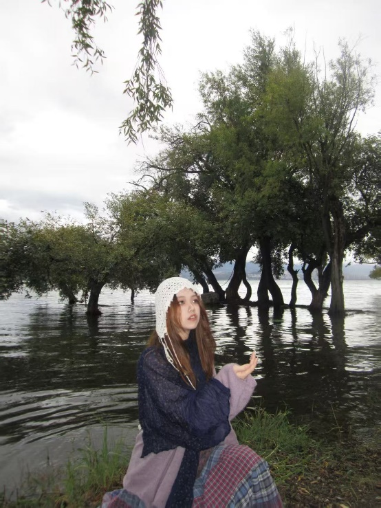
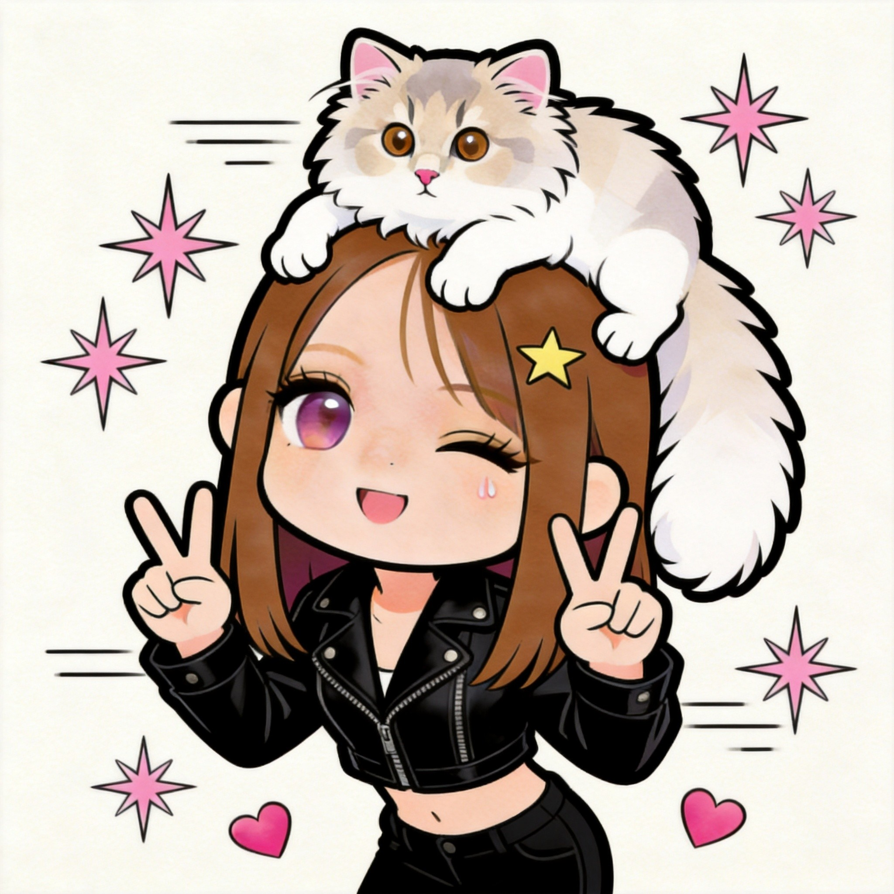
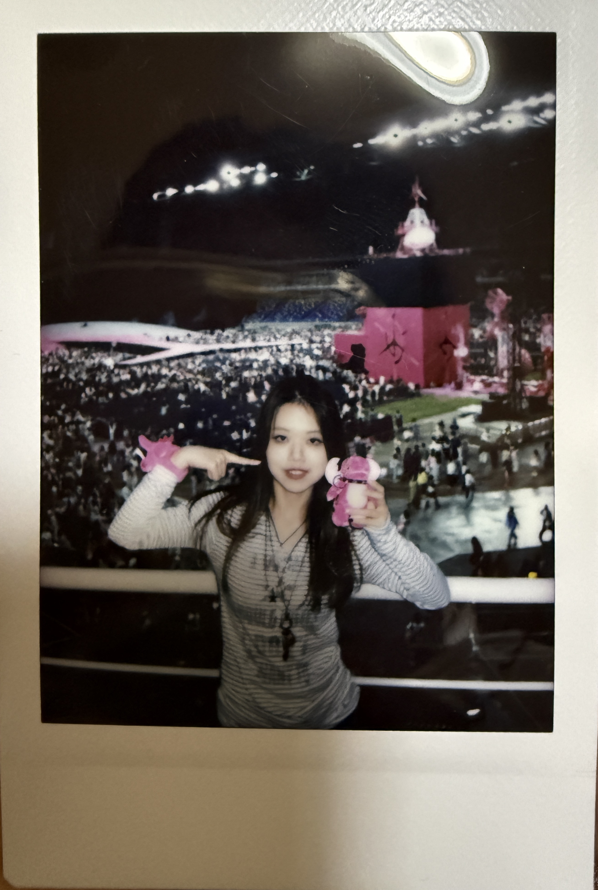
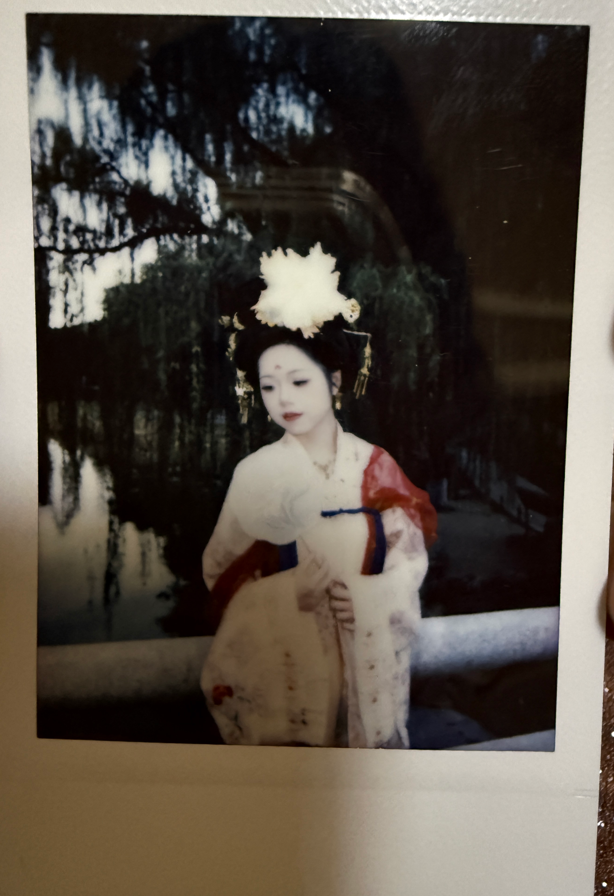
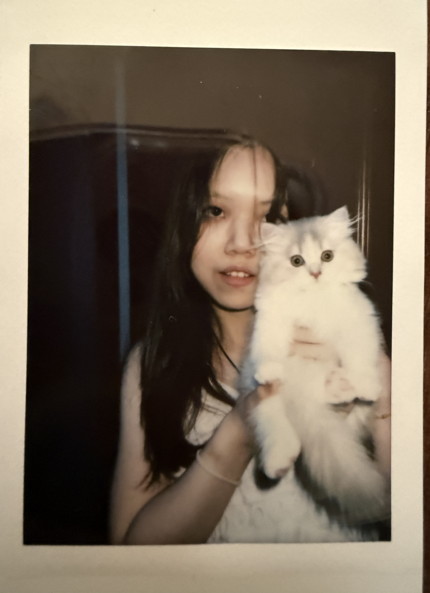
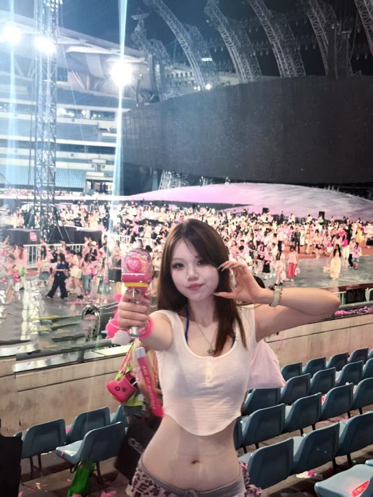
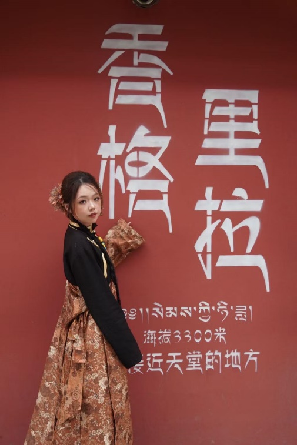
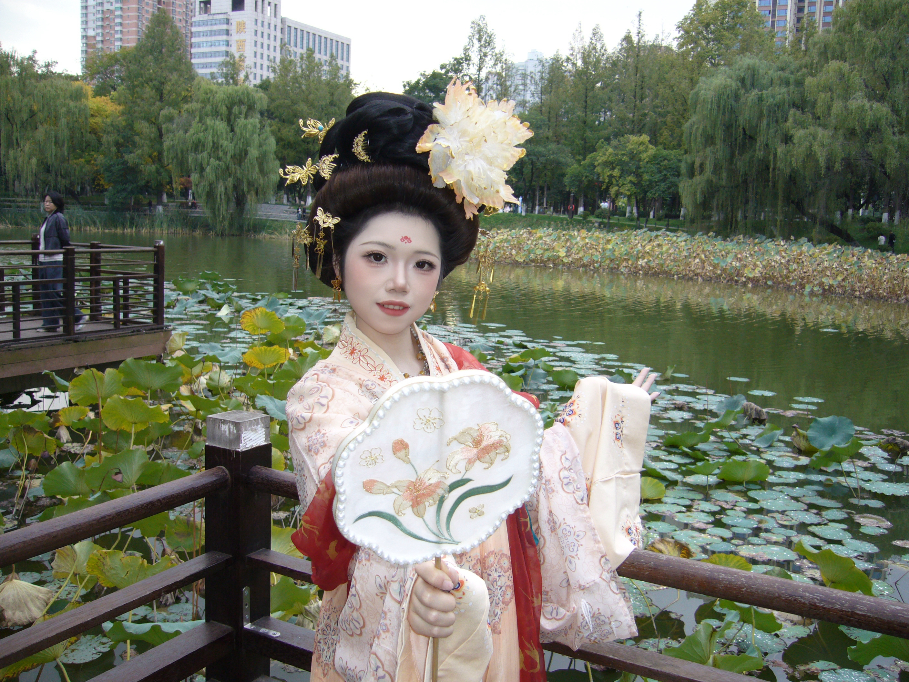

PHOTO
DIARY
DIARY

把生活里细碎且真实的美好，认真保存下来。

PERSONAL ARCHIVE · 01
ISFP，高敏感低精力体质，
习惯在观察与思考里梳理自我。



“不为流量，不求热闹。只给自己留一块安静、独立的自留地。”
SELECTED NOTES · 02

把生活里细碎且真实的美好，认真保存下来。
拍照、爵士舞、养猫、研究数码与效率工具。
文章 / 女性成长
一枚习惯深度思考、认真生活的普通人。
性格细腻敏感，擅长感知情绪、捕捉细节，习惯用结构化思维梳理混乱，用文字治愈内耗。
从前在高压职场里追赶节奏，经历过焦虑、躯体化、自我怀疑，也慢慢学会与情绪共处、与自己和解。
褪去职场标签后，开始忠于自我。
不再盲目内卷，只专注自我沉淀、持续学习、稳定成长。
我热爱生活里所有细碎且真实的美好：
认真养猫、研究数码与效率工具、规划旅途与日常、坚持文字输出；
喜欢拍照定格温柔瞬间，也在入门爵士的过程中，用舞蹈松弛情绪、舒展自己。
我始终相信：
人生不需要急促赶路，稳稳进步、慢慢发光，就是最好的状态。
搭建这个站点，不为流量，不求热闹。
只给自己留一块安静、独立的自留地。
用来存档职场感悟、情绪自愈心得、女性成长思考、生活细碎复盘与技能学习沉淀。
把碎片化的想法留住，让成长有迹可循。
在这里，自由、安静、长期主义。

把碎片化的想法留住，让成长有迹可循。

在普通的日子里，认真生活。

在传统与当下之间，记录自己的样子。
ON DOUYIN · 03
LEAVE A NOTE · 04
如果你也在观察、思考和慢慢成长，欢迎留下你的想法。